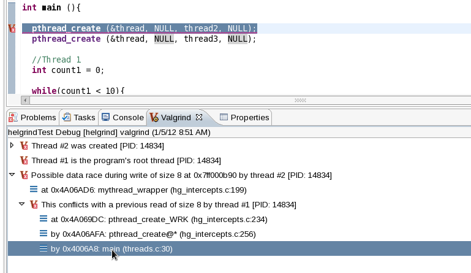

| Using Helgrind | ||
|---|---|---|
|
|
|
|
| Using Cachegrind | Remote Valgrind | |
Helgrind is a tool that allows you to detect synchronisation errors in C, C++ and Fortran programs that use POSIX pthreads. For more information about Helgrind, refer to http://valgrind.org/docs/manual/hg-manual.html.
All the synchronization errors found by Helgrind are displayed in the Valgrind view, which appears automatically after a profile run. Each displayed error can be expanded in the Valgrind view to display its stack trace.

In some cases, Helgrind can determine which section of the source code causes a reported error. Whenever this is the case, double-clicking on the stack trace of the reported error will open the related source file and place the cursor on the line responsible for the error. This stack trace view is similar to the view that the Memcheck plug-in provides.
To configure a Helgrind profile run, navigate to Profile As > Profile Configurations to access the Profile Configurations menu. In the Valgrind Options tab, navigate further to Helgrind Options .

The Helgrind Options tab allows you to configure the following options:
For more information about each Helgrind option in the Valgrind plug-in for Eclipse, refer to man valgrind, section "HELGRIND OPTIONS".
|
|

|
|
| Using Cachegrind | Remote Valgrind |